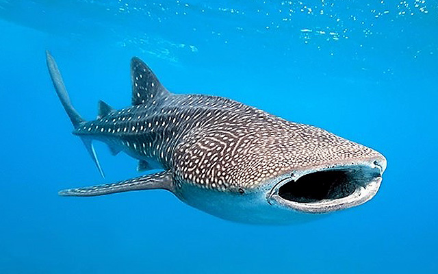

Biodiversity
A haven for wildlife
Sorsogon's varied ecosystems — from the upland forests of Bulusan Volcano Natural Park to coastal mangroves and offshore coral reefs — support an extraordinary range of flora and fauna.
The province sits within the Bicol Peninsula Biodiversity Corridor and its waters are part of the Coral Triangle — the global centre of marine biodiversity — supporting hundreds of fish species, sea turtles, cetaceans, and the world-famous whale sharks of Donsol.

Species
Notable wildlife
Whale Shark (Butanding)
The world's largest fish visits Donsol Bay seasonally. Sorsogon has one of the largest documented aggregations globally.
Bryde's Whale
These large baleen whales are occasionally sighted in the San Bernardino Strait during cooler months.
Philippine Eagle
Sightings of the critically endangered national bird have been recorded in forests of the Bulusan Natural Park.
Sea Turtles
Green and hawksbill sea turtles nest along remote beaches in Matnog, protected under conservation laws.
Spinner Dolphins
Playful pods are a common sight in the San Bernardino Strait and the offshore Pacific coast.
Monitor Lizard
The bayawak inhabits forested areas and coastal mangroves, playing a key role in ecosystem health.
Manta Rays
Reef manta rays are resident to Donsol waters, often feeding alongside whale sharks during peak season.
Philippine Cockatoo
The endangered Katala has been spotted in mangrove areas — a rare and significant conservation sighting.
Protected Areas
Conservation zones
Bulusan Volcano Natural Park
3,673 hectares of old-growth forest, crater lakes, and volcanic features. Home to numerous endemic species and a critical watershed.
Donsol Marine Sanctuary
Established to protect whale shark feeding grounds. Visitor interaction is strictly regulated to minimise disturbance to the animals.
Matnog Marine Reserve
Protects coral reefs and seagrass beds around the Matnog island group, supporting biodiversity and local fishing communities.
Mangrove Rehabilitation Areas
Community-led projects along Sorsogon Bay protect nursery habitats for juvenile fish and provide natural storm protection.